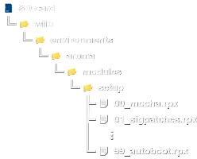

Añadir aplicaciones a Aroma
Añadir "módulos setup" a Aroma
Los "módulos setup" son modificaciones o parches que se aplican directamente al firmware original de la consola. Para Aroma se colocan en la carpeta sd:/wiiu/environments/aroma/modules/setup, examina la ruta de carpetas en las imágenes de referencia.
Estructura

- La estructura correcta es:
sd:/wiiu/environments/aroma/modules/setup/##_module_name.rpx.
Instrucciones
- En este momento debes tener la Wii U apagada.
- Saca la tarjeta SD de la Wii U y ponla en tu PC (o teléfono inteligente) para colocar los archivos.
- Descarga Sigpatches. El módulo Sigpatches sirve para solucionar el mensaje: "No se puede usar este programa. El identificador de Nintendo Network que se usó para adquirirlo se ha borrado.", así como el error 199-9999.
- Únicamente necesitas el archivo
01_sigpatches.rpx. - Copia el archivo
01_sigpatches.rpxy pégalo en la carpetasd:/wiiu/environments/aroma/modules/setup. - Así debe quedar el módulo Sigpatchese en la tarjeta SD:
- Es correcto:
sd:/wiiu/environments/aroma/modules/setup/01_sigpatches.rpx. - Es incorrecto:
sd:/wiiu/apps/01_sigpatches.rpx. - Extrae la tarjeta SD de forma segura y conecta a la Wii U con la consola apagada.